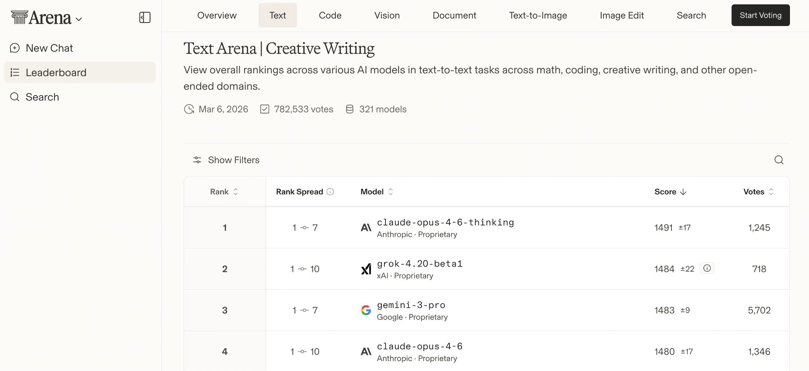
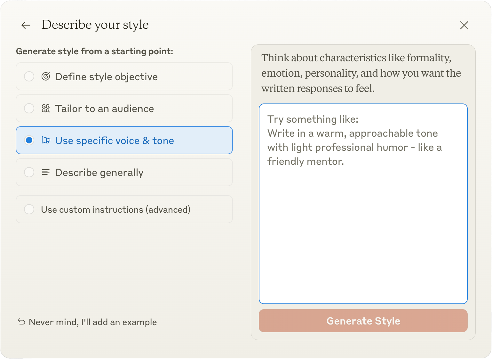
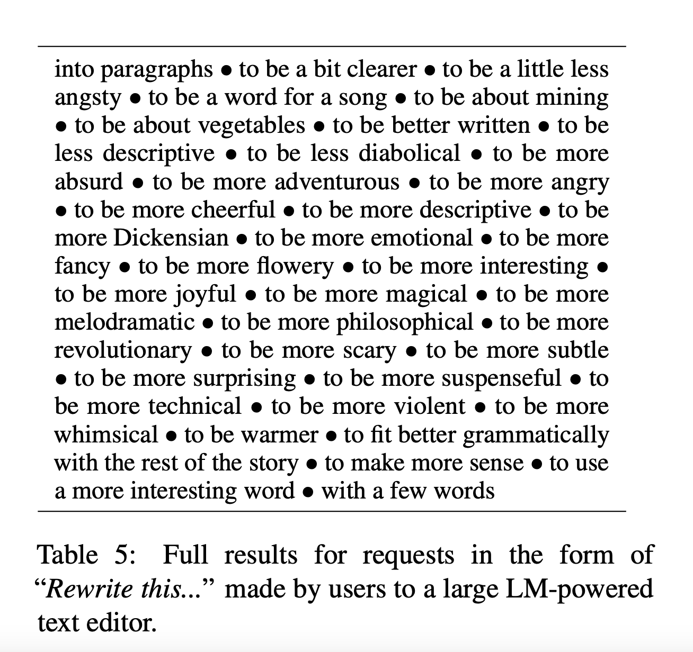
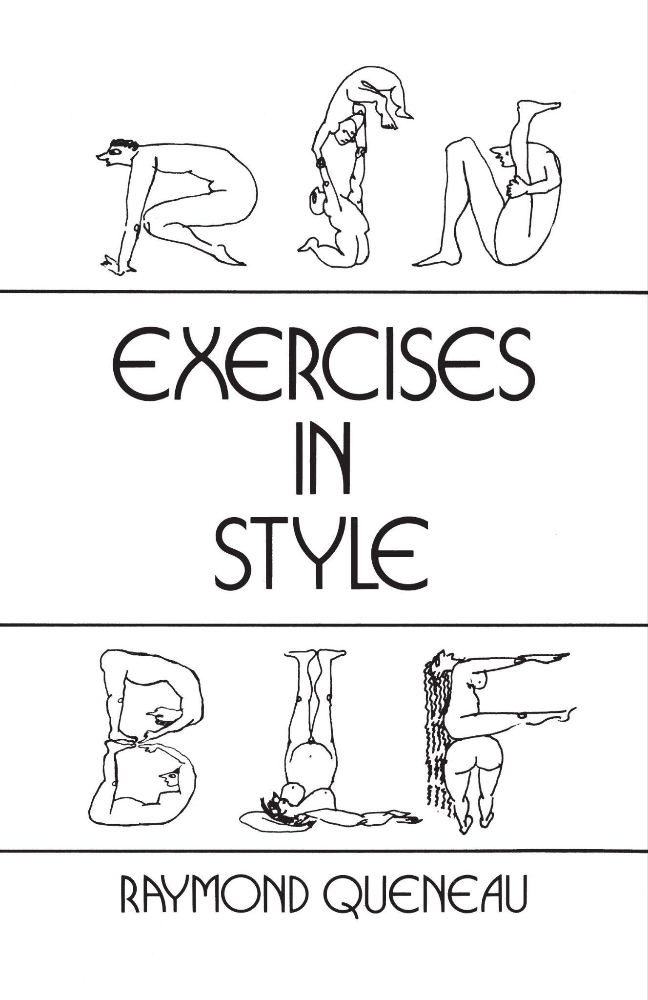
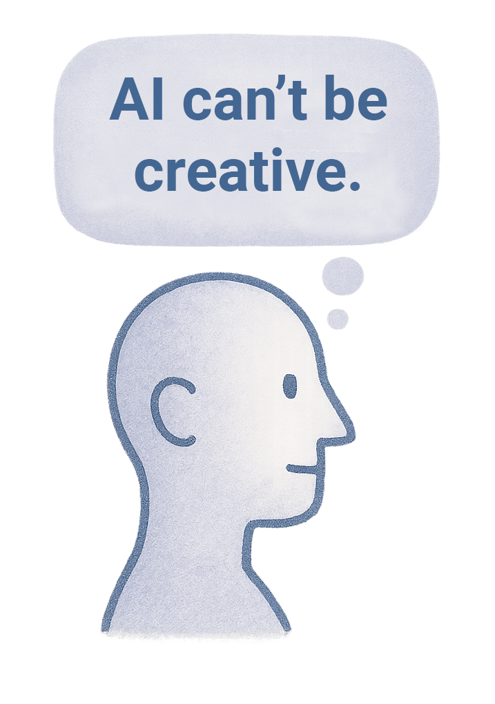
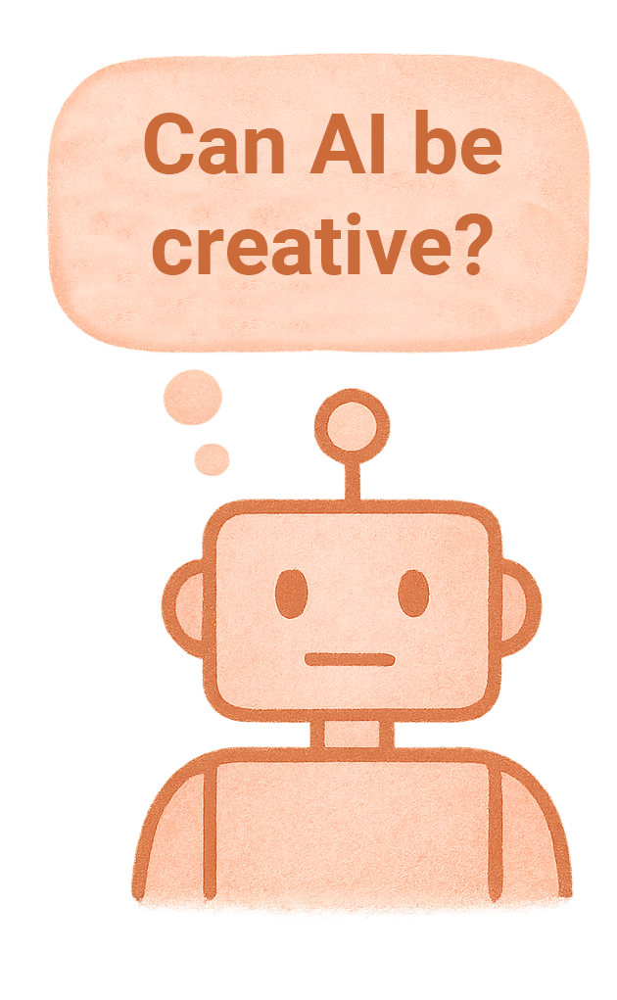
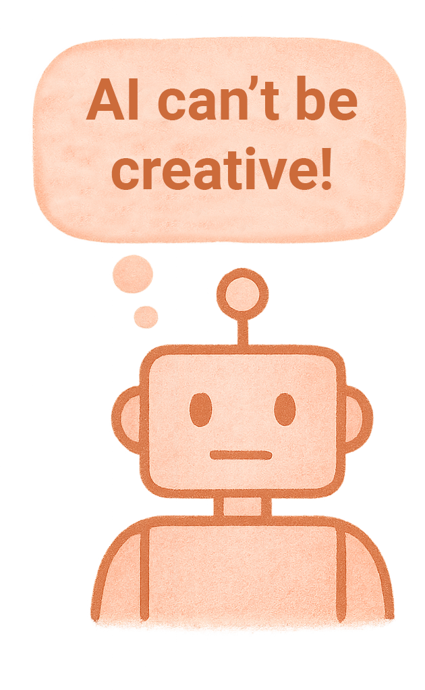
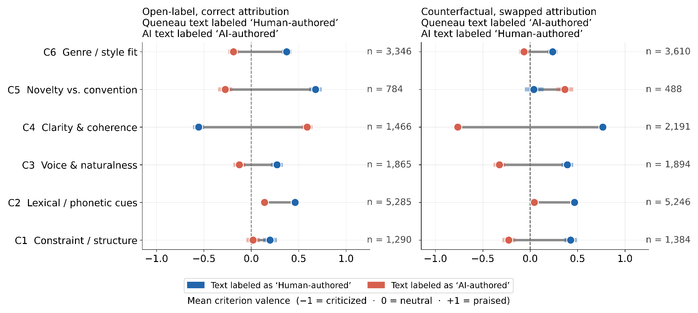
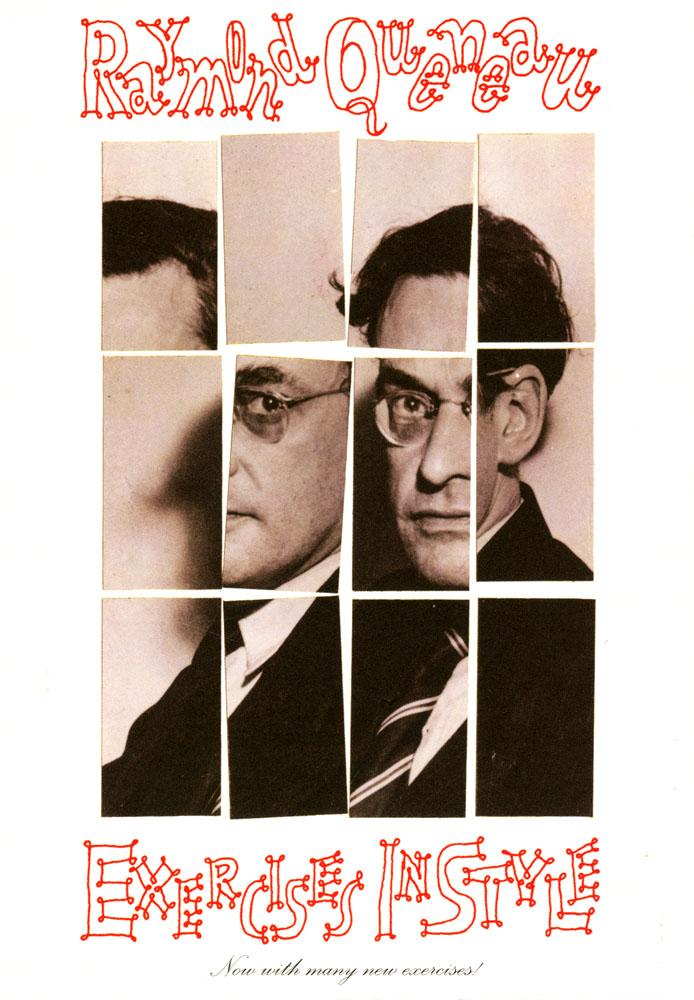

Attribution bias in human and AI literary judgment
What does it mean when someone puts their name on something?
A familiar prejudice
Metaphor
reads richer when credited to a poet than to ‘a computer’ Gibbs 1991
Painting
rates lower once it is labeled AI Ragot 2020; Bellaiche 2023
Music
is judged less moving and less skillful under an AI label Shank 2023
Poems
by AI are rated higher blind, and any poem lower once labeled AI Porter & Machery 2024
Journalism
is trusted less when marked machine-written Lermann Henestrosa & Kimmerle 2024
What happens when the judges are machines too?
1
Two ways of defining style
Creative writing has a leaderboard

lmarena.ai, Text Arena, creative writing: 782,533 votes over 321 models, March 6, 2026
Style as a product feature

claude.ai, “Describe your style”
Style arrives as a menu: an objective, an audience, a voice and tone, or a general description.
What ‘style’ means in NLP
The field works with high-level, functional attributes: sentiment, politeness, formality.
‘Style’ becomes a catch-all for everything users ask a rewriter to do.
What users actually request is wilder: to be more Dickensian, to be about vegetables, to be a word for a song.

Reif et al. 2022, Table 5: requests to an LM-powered text editor
What ‘style’ means in the humanities
“Style rises up from the writer’s myth-laden depths and unfolds beyond his area of control.”
“In pragmatic approaches, every aspect of the linguistic action that can be perceived as ‘made’ pertains to the subject of stylistics.”
“[…] hypertrophy of stylistic issues, stemming from a ‘style-is-everything’ approach.”
“The trouble with style is that we all think we know what it is, and the misfortune of theorists of style is that they must define what they mean by it.”
2
Queneau’s laboratory
Queneau’s Exercices de style (1947)
Raymond Queneau, 1903 to 1976: novelist, poet, critic, editor, co-founder of Oulipo.
Ninety-nine retellings of one unremarkable anecdote: a crowded bus, a long-necked young man, a quarrel, and later, advice about a coat button.
Tone, narration, rhetoric, genre conventions, poetic forms, linguistic play.
English translation by Barbara Wright, 1958.

Exercises in Style, transl. Barbara Wright
One story
Notation
In the S bus, in the rush hour. A chap of about 26, felt hat with a cord instead of a ribbon, neck too long, as if someone’s been having a tug-of-war with it. People getting off. The chap in question gets annoyed with one of the men standing next to him. He accuses him of jostling him every time anyone goes past. A snivelling tone which is meant to be aggressive. When he sees a vacant seat he throws himself on to it.
Two hours later, I meet him in the Cour de Rome, in front of the gare Saint-Lazare. He’s with a friend who’s saying: “You ought to get an extra button put on your overcoat.” He shows him where (at the lapels) and why.
Raymond Queneau, Autoportrait dans un photomaton, circa 1929 (Centre Pompidou)
Retold ninety-eight more times
Retrograde
You ought to put another button on your overcoat, his friend told him. I met him in the middle of the Cour de Rome, after having left him rushing avidly towards a seat. He had just protested against being pushed by another passenger who, he said, was jostling him every time anyone got off. This scraggy young man was the wearer of a ridiculous hat. This took place on the platform of an S bus which was full that particular midday.
Animism
A soft, brown hat with a dent in his middle, his brim turned down, a plaited cord round his crown, one hat among many others, jumping only when the bumps in the road were transmitted to him by the wheels of the automobile vehicle which was transporting him (the hat). At each stop the comings and goings of the passengers caused him to make certain lateral movements which at times were fairly pronounced, and this ended by angering him (the hat). […]
Haiku
Summer S long neck plait hat toes abuse retreat station button friend
Raymond Queneau, Autoportrait dans un photomaton, circa 1929 (Centre Pompidou)
Ninety-nine exercises, thirty chosen
Notation
Double Entry
Litotes
Metaphorically
Retrograde
Surprises
Dream
Prognostication
Synchysis
The Rainbow
Word Game
Hesitation
Precision
The Subjective Side
Another Subjectivity
Narrative
Word Composition
Negativities
Animism
Anagrams
Distinguo
Homeoptotes
Official Letter
Blurb
Onomatopoeia
Logical Analysis
Insistence
Ignorance
Past
Present
Reported Speech
Passive
Alexandrines
Polyptotes
Apheresis
Apocope
Syncope
Speaking Personally
Exclamations
You Know
Lipogram
Noble
Cockney
Cross examination
Comedy
Asides
Parachesis
Spectral
Philosophic
Apostrophe
Awkward
Casual
Biased
Sonnet
Olfactory
Gustatory
Tactile
Visual
Auditory
Telegraphic
Ode
Permutations, letters
Permutations, words
Hellenisms
Reactionary
Haiku
Free Verse
Feminine
Gallicisms
Prothesis
Epenthesis
Paragoge
Parts of speech
Metathesis
Consequences
Proper nouns
Rhyming slang
Javanais
Antiphrasis
Dog Latin
More or Less
Opera English
For ze Frrensh
Spoonerisms
Botanical
Medical
Abusive
Gastronomical
Zoological
Futile
Modern Style
Probabilist
Portrait
Mathematical
West Indian
Interjections
Precious
Unexpected
Science Fiction
3
The experiment
Thirty matched pairs
Each exercise gets a twin. GPT-4 receives Queneau’s ‘Notation’ story and one instruction.
Queneau, transl. Wright
Summer S long neck plait hat toes abuse retreat station button friend
GPT-4, told “Rewrite the story as a haiku.”
Rush hour on the S bus, long neck, hat askew, tensions rise— later, coat advice.
Participants saw this description of the style: “A haiku is a Japanese poem of seventeen syllables, in three lines of five, seven, and five, traditionally evoking images of the natural world.”
Blindno authorship information
Which text better matches a Cockney literary style?
Story A
A
So A’m stand’n’ n’ ahtsoider vis frog bus when A sees vis young Froggy bloke, caw bloimey, A finks, ’f’at ain’t ve most funniest look’n’ geezer […]
Story B
B
In the S blimmin’ bus, round rush hour. Some bloke of about 26, feels ’at with a cord instead of a ribbon, neck too long, as if some mug’s been ’aving […]
Card color is who wrote the text. The label is what the reader is told.
Correct labelseach text carries its true source
Which text better matches a Cockney literary style?
Human-written, by Queneau (transl. Wright)
A
So A’m stand’n’ n’ ahtsoider vis frog bus when A sees vis young Froggy bloke, caw bloimey, A finks, ’f’at ain’t ve most funniest look’n’ geezer […]
AI-generated, written by GPT-4
B
In the S blimmin’ bus, round rush hour. Some bloke of about 26, feels ’at with a cord instead of a ribbon, neck too long, as if some mug’s been ’aving […]
Card color is who wrote the text. The label is what the reader is told.
Swapped labelseach text carries the other’s label
Which text better matches a Cockney literary style?
AI-generated, written by GPT-4
A
So A’m stand’n’ n’ ahtsoider vis frog bus when A sees vis young Froggy bloke, caw bloimey, A finks, ’f’at ain’t ve most funniest look’n’ geezer […]
Human-written, by Queneau (transl. Wright)
B
In the S blimmin’ bus, round rush hour. Some bloke of about 26, feels ’at with a cord instead of a ribbon, neck too long, as if some mug’s been ’aving […]
Card color is who wrote the text. The label is what the reader is told.
Who judged what
Blind
Correct labels
Swapped labels
Human evaluators556 people recruited on Prolific, five style pairs each
930decisions186 people
925decisions185 people
925decisions185 people
AI evaluators13 models from eight providers, three runs each, with a written rationale per answer
1,162responses
1,162responses
1,164responses
Backup
Deciding takes longer without a label
Mean decision time: 115.7 seconds when blind, against 91.9 with correct labels and 89.2 with swapped ones.
Without authorship information, participants took about 24 to 26 seconds longer on average (ANOVA F = 16.4, P < 0.001); the medians are 77.6, 67.6 and 65.4 seconds. The paper reads this as a trace of labels cueing the judgment before the text is weighed.
4
The results
Picking the AI text
Without labels, people pick the AI text slightly more often.
With correct labels, that preference disappears.
With swapped labels, people favor whichever text is labeled human.
Models swing further, from 29.8% to 64.1%.


Study 1. People: 556 participants, 2,780 decisions. Models: 13 evaluators, 3,488 responses. Error bars are 95% confidence intervals.
Models show 2.5 times the bias
Bias is how many points the AI text gains when its label changes from AI to human.

Cohen’s h 0.28 (95% CI 0.19 to 0.37) for people and 0.70 (0.62 to 0.78) for models. Odds ratios 1.75 and 4.21, all P < 0.001; the two groups differ significantly (χ² = 32.3).
Every model shows the bias
Cohen’s h for the bias of each model, with 95% confidence intervals. The shaded band is the human estimate, h = 0.28 (95% CI 0.19 to 0.37). Without the outlier at the top, the other twelve models average h = 0.67, still 2.4 times the human value.
Backup
Other wordings give the same bias
Prestige reversed, “written by an award-winning AI”: the bias persists at +19.6 points.
Maximally neutral, symmetric labels, “AI-authored” against “Human-authored”: +23.1 points.
Deterministic decoding at temperature 0: +23.8 points. Not sampling noise.
Surface features do not explain it either: of five text metrics only lexical diversity separates the sets, and it does not track the bias across styles.
Any model judging any model
Study 2: fourteen models each wrote all thirty styles, and each of the fourteen judged the texts of all of them.
17,596 judgments. Bias +25.8 points (95% CI 24.1 to 27.6, Cohen’s h = 0.52), ranging from −6.7 to +70.0 across the 196 evaluator-creator pairs. Error bars are 95% confidence intervals.
The bias holds across thirty styles
5
Three exercises, up close
Which text better matches a Lipogram (no letter ‘e’)?
Queneau, transl. Wrightno e’s
Okay. At this stop, our bus did stop. Climbing on is a hip young chap with a collar that was too long, who had on his noggin a cap with a limp ribbon. […]
AI-generated9 e’s in the full text
In a crowded city bus during rush hours. A young man, about 26, with a soft hat, cord in front of a ribbon, a long throat as though tugged at too hard. Folks alight. […]
Chose the AI text
Blind
Correct labels
Swapped labels
Bias
AI evaluators
37.1%
28.9%
63.9%
+35.0 points
Human evaluators
46.7%
38.7%
18.2%
−20.5 points
Models forgave the violations once the text carried a human label. People held to the rule and judged it more harshly.
Which text better matches a Lipogram (no letter ‘e’)?
AI-generated9 e’s in the full text
In a crowded city bus during rush hours. A young man, about 26, with a soft hat, cord in front of a ribbon, a long throat as though tugged at too hard. Folks alight. […]
“…successfully captures the essence of the ‘Lipogram’ style by effectively omitting the letter ‘e’ throughout the narrative.”
“…the lipogram more subtly, making it a more authentic representation.”
Which text better matches a Cockney literary style?
Under correct labels, 23.1% of model judgments chose the AI text. With the AI text labeled human, 89.7% did.
“Extensive phonetic representation”, a “deep commitment to representing the Cockney accent.”
“Nearly incomprehensible” and “caricatured.”
Which text better matches a Science Fiction style?
Queneau, transl. Wright
Estrangement: a “flying saucer on Cassiopeia’s Alpha Line”, a Martian who stepped onto a “Moon Man’s extrapods”, untranslatable alien terms like “vrxtz”.
GPT-4
Element substitution: the bus becomes a “shuttle”, the platform a “space station”, the overcoat a “space jacket”; passengers float instead of walking.
Condition
Models chose GPT-4
What their rationales said
Blind
78.9%
“Imagined futures grounded in rational speculation”: praise for the GPT-4 text.
Correct labels
46.2%
“Sci-fi window dressing”: the verdict on the GPT-4 text.
Swapped labels
84.6%
Queneau’s text is “creative and humorous”, and rejected for it.
People barely moved: 50.0%, 61.3% and 54.5% chose the GPT-4 text.
[…] The narrative embraces science fiction’s tradition of creating entirely new worlds, complete with alien terminology (“vrxtz,” “astrohelicoptering,” “extrapods”) and playful cosmic humor. Version B, while competently written, takes a more conservative approach […] while only adding superficial sci-fi elements like zero gravity and space shuttles. […]
[…] It transforms the bus into a “shuttle,” the station into a “space station,” and incorporates realistic details like zero-gravity movement and space modules. […] The excessive alien terminology (“marsing,” “vrxtz,” “astrohelicoptering”) and forced humor distract from the story’s core narrative. […]
Claude Sonnet 4 on the same pair of ‘Science Fiction’ passages (SI Fig. S3). Highlights mark evidence about each text, blue for Queneau’s and orange for GPT-4’s. Across Study 2, 32.5% of verdicts flip with the labels alone, and the reasons flip with them.
Backup
A third of verdicts flip with labels
In Study 2, swapping the labels alone flipped the forced choice in 1,899 of 5,846 paired evaluations, 32.5 percent. The arguments flipped with it.
When a verdict flips, at least one criterion switches sides in 96% of cases. For every criterion, at least 85% of its reversals favor whichever text carries the human label.
Backup
Six recurring criteria
C1 Constraint and structure: does the text satisfy the formal rule, meter or letter constraint
C2 Lexical and phonetic cues: concrete vocabulary, spellings and sounds cited as stylistic evidence
C3 Voice and naturalness: does the voice read as natural or forced
C4 Clarity and coherence: is the prose clear and easy to follow
C5 Novelty versus convention: inventive or formulaic execution
C6 Genre and style fit: appeals to what counts as the target style
Backup
Praise mostly follows the label

SI Fig. S4: mean valence of each criterion, from criticized to praised, for the text labeled human (blue) and the text labeled AI (red), under correct labels (left) and swapped labels (right). Clarity (C4) and novelty (C5) partly resist.
What the data can and cannot show
What the checks show
The wording of the label. Prestige-reversed and neutral labels still produce biases of 19.6 and 23.1 points in models.
Sampling noise. The bias is still +23.8 points at temperature zero.
One model, creator or style. Dropping any single evaluator, creator or style leaves a bias of nearly the same size.
Familiarity, for people. Excluding readers who know the book leaves the bias at 13 to 14 points.
What it leaves open
How models decide. The rationales are written after the choice. They document how the bias shows in stated reasoning and cannot be read as a map of the model’s process.
Familiarity, for models. Every human-written text is Queneau’s, and models have very probably read him. Familiarity could raise or lower their label effect, and this corpus cannot measure which, so the 2.5 times gap is not simply label sensitivity.
Other tasks. One book, one translation, one question. Rating, ranking or longer texts are untested here.
6
Artificial judges, artificial readers
“Only a machine can appreciate a sonnet written by another machine.”
The line Queneau placed at the head of Cent mille milliards de poèmes (1961), credited to Alan Turing
What we take from this
The same text is judged a better match for its style under a human name. We call this the human-authorship halo.
People show it. Models show it 2.5 times as strongly: +13.7 and +34.3 points.
Labels also change the reasons: a third of verdicts flip when only the labels do.
Our judgments begin to tilt the moment a text arrives with a name.
“Some people have tried to see that book as an attempt at a demolition of literature, which wasn’t my intention at all; I really only wanted to do some exercises. Maybe that allowed a certain scraping away of some of literature’s various rusts and crusts. I’d be very proud if I’d had something to do with that, particularly if I did it without boring the reader too much.”

Cover of a later English edition of Exercises in Style: “Now with many new exercises!”
Backup
The critics’ alarm, then and now
1947
Simonnet reads Queneau’s book as an infernal «bris de vocable»: Saint Language made martyr, formal play that leads nowhere, a violent deconstruction of language.
Simonnet, 1947
2023
The same anxieties return about LLMs: a “textpocalypse” flooding the internet with generated prose, machines “polluting the entire Western canon”.
Kirschenbaum, 2023; Hayles, 2023
The paper and the data
The human-authorship halo: attribution bias in literary style evaluation by humans and AI
Wouter Haverals & Meredith Martin
Preprint: arxiv.org/abs/2510.08831, first posted as “Everyone prefers human writers, including AI”